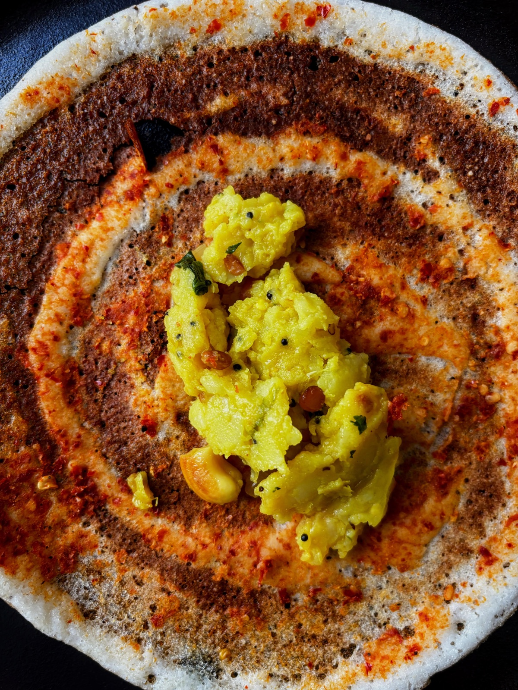
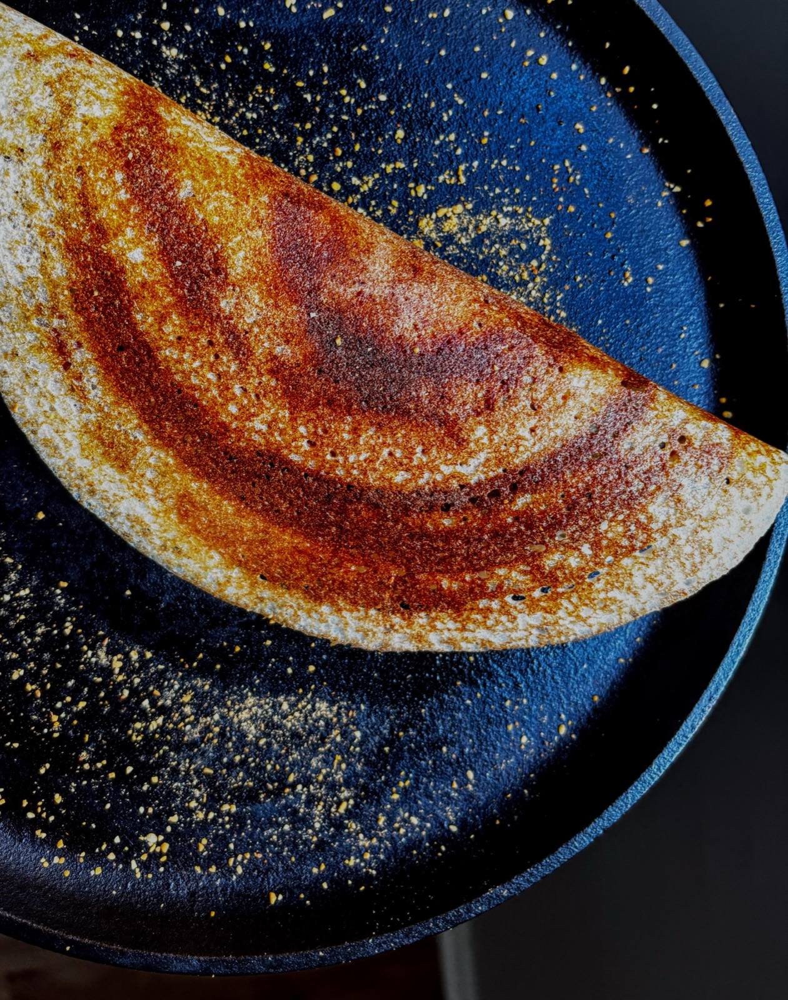

Alumni Spotlight
One of our own is building something delicious — and bringing it to the streets of Columbus.
One of the best parts of the Working Professional MBA program is who you end up sitting next to. Our classmates aren't only students — they're builders, operators, and dreamers chasing ideas on nights and weekends. In this spotlight, we want to share the story of one of our own: Naren Barade Sivaji (Class of 2026) and the food venture he's building, Dosa Rush.
If you've never had a dosa, picture this: a thin, golden, crispy crêpe made from a naturally fermented rice-and-lentil batter, often wrapped around spiced fillings and served with fresh chutneys. It's a cornerstone of South Indian cooking — think of it as the crêpe's bolder, savorier cousin. It's fast, it's craveable, and it travels beautifully, which is exactly why Naren believes it's a natural fit for a food truck.

Naren's thesis is simple: this kind of food is in real demand, and right now there's very little of it on the streets of Columbus. Where others see an empty spot on the map, he sees an opportunity — a chance to bring something genuinely different to the city's food scene and build a brand around it. Dosa Rush is his answer.
Like a lot of WP MBA students, Naren is doing this the hard way — building while he learns, testing the concept, and putting in the work to turn an idea into something real. That entrepreneurial drive is exactly what this program is about, and it's the kind of journey our community loves to get behind.

One interesting piece of Naren's approach: he's financing Dosa Rush through a community-lending crowdfunding campaign — a model where local backers lend to a small business and earn interest as it grows, rather than giving up equity. If you're curious about this kind of funding vehicle for your own ideas, the easiest way to learn more is to search the web for "Dosa Rush Honeycomb Credit". Naren is also happy to share what he's learning — reach out to him with questions.
Keep an eye on Dosa Rush. Follow along, cheer him on, and if you know the food-truck world or the local food scene, reach out — he'd love to connect.
Building something of your own? The council wants to spotlight more student and alumni founders — reach out and tell us your story.